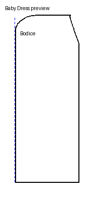
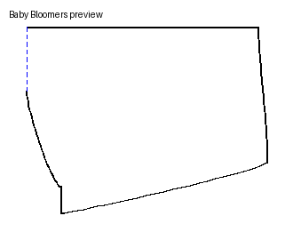

🌸 Baby Fashion Engine
อัปเดตล่าสุด 27/04/2026 · 16:31
แคตตาล็อกแพทเทิร์นเสื้อผ้าเด็ก · อัปเดตอัตโนมัติทุกครั้งที่สั่งสร้าง · คลิกการ์ดเพื่อเปิดไฟล์
2 รอบ
🩲 กางเกงใน Bloomers · 1 👗 เดรสเด็ก · 1

👗 เดรสเด็ก
3-6m
ของเดิมของเดิม3 ไฟล์

🩲 กางเกงใน Bloomers
3-6m
ของเดิมของเดิม3 ไฟล์